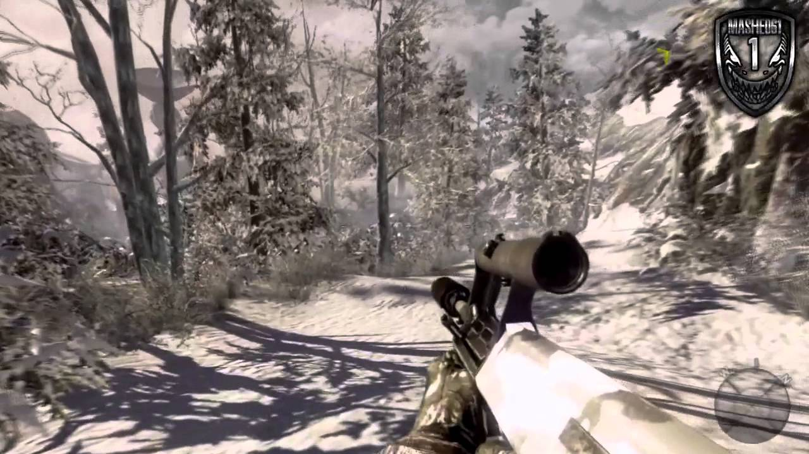
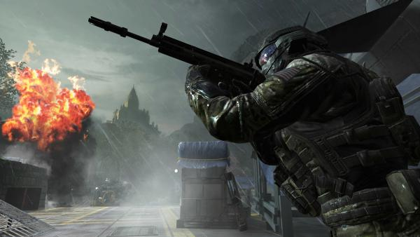
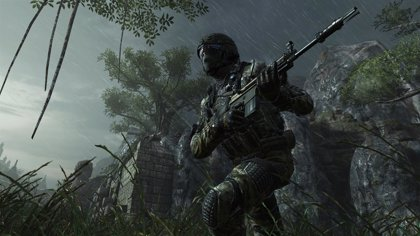
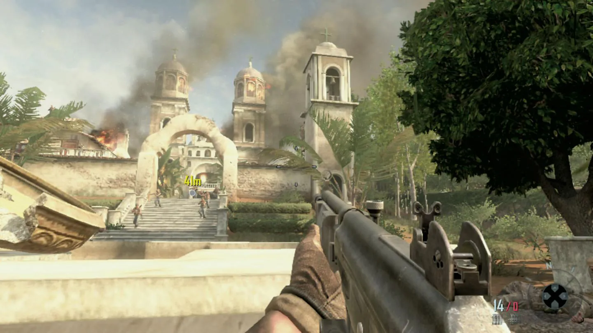
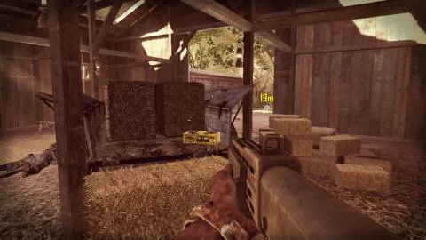
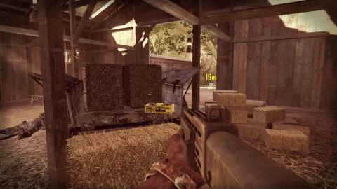

Historia
de
Call Of Duty Black Ops
Call of Duty Black Ops 1
El 25 de febrero de 1968, el agente y capitán Alex Mason de la SAD/SOG es atado a una silla en una sala de interrogatorios. Sin saber él mismo de su paradero, se le bombardea de preguntas por sus captores, los cuales se encuentran tras una ventana que conecta la sala del protagonista con la de las personas que lo capturaron, preguntando acerca de una estación de números. La mayoría de las misiones en el juego se presentan como retrospectivas de Mason entre 1961 y 1968.
*Operación 40 (Cuba):En 1961, Alex Mason, acompañado del sargento Frank Woods y del suboficial jefe segundo Joseph Bowman (dos amigos en común y compañeros de grupo de Mason) apoyados además por los grupos rebeldes cubanos, intentan asesinar a Fidel Castro en Bahía de Cochinos, durante la invasión a Cuba, como parte de la Operación 40.Usando la invasión como distracción para infiltrarse en la mansión de Castro, Mason y su equipo efectúan aparentemente con éxito el asesinato, dirigiéndose a un aeródromo para escapar en un C-130, sin embargo, una barricada de vehículos corta el paso en la pista de aterrizaje, por lo que Mason decide bajarse y tripular un cañón antiaéreo para destruirlos y abrirle paso al avión. Luego de cubrir la extracción con éxito, es capturado por el verdadero Fidel Castro, revelando que el Castro asesinado era un doble. Debido a una alianza con la Unión Soviética, Castro entrega a Alex al general Nikita Dragovich.


*Vorkuta (Union Soviética): Mason permanece cautivo en un Gulag de Vorkutá durante dos años. Durante su encarcelamiento, Mason se hace amigo de Viktor Reznov, un exsoldado del Ejército Rojo que organiza una fuga a gran escala de la prisión de esta misma ciudad, logrando escapar Mason, sin el mismo resultado Reznov, a quien Alex no vuelve a ver.

*Departamento de Defensa (Estados Unidos): Un mes más tarde de lo ocurrido, y luego de haberse reunido con el presidente John F. Kennedy, este autoriza al grupo de Mason el asesinato de Dragovich.


*Orden Ejecutiva): Posteriormente, en noviembre de 1963, Mason, Woods, Bowman y Grigori Weaver este último, siendo un doble agente que ayuda a la CIA son enviados al Cosmódromo de Baikonur en la República Socialista Soviética de Kazajistán para interrumpir el programa espacial soviético y eliminar miembros del programa soviético conocido como «Ascensión» nazis a quienes se les había dado asilo en Rusia a cambio de sus conocimientos.En el inicio de la operación, Weaver es descubierto y capturado, y Alex ve a Kravchenko torturándole y sacándole el ojo izquierdo, sin embargo, Mason y su equipo lo rescatan después, mientras destruyen el cohete Soyuz. Durante esta misión, Dragovich elude el asesinato, lo que provocó que Mason lo buscara durante los siguientes cinco años.


*SOG (Vietnam del Sur): Posteriormente, ya en 1968, el MACV-SOG se estableció en Vietnam para investigar la presencia soviética en el Sudeste Asiático. Alex y Jason Hudson reciben a Frank Woods, que recién volvía de un despliegue de combate, este saluda con alegría a su amigo pero con frialdad y escepticismo al agente de la CIA. Mientras Woods le informa a Mason sobre la creación del SOG, el ejército Norvietnamita ataca la base, comenzando la defensa de Khe Sanh, tras eliminar varios carros T-55, Bowman llega a la base y es calurosamente bienvenido por Alex y Frank, pero este ignora a Hudson mencionándole la posibilidad de rescatar a un desertor soviético.
*El Desertor (Vietnam del Sur): El SOG entra en la ciudad de Huế durante la ofensiva del Tet para recuperar un dossier con información sobre Dragovich proveniente de un desertor ruso. Mientras descienden a rapel del helicóptero a la instalación del MACV-SOG donde se encuentra el desertor, este es derribado por la artillería antiaérea, pero aun así, Alex y Frank logran entrar al edificio, donde se reúnen con Bowman para continuar con la búsqueda del ruso. Al entrar a una habitación diferente que Bowman y Frank, Mason es sorprendido por un soldado del ejército Norvietnamita, pero este es apuñalado por Reznov, que se revela como el desertor. Siendo apoyados por un helicóptero Huey artillado, los cuatro logran avanzar hasta un punto de rescate pero no pueden abordar el helicóptero debido a la preferencia de los heridos, resistiendo el ataque de infantería y blindados enemigos, por fin son rescatados por una lancha patrullera de la Armada.


*Números (Hong Kong): Mientras tanto, Hudson y Weaver interrogan al Dr. Daniel Clarke, ingeniero que estabilizó los complementos volátiles para el Nova-6, en Kowloon. Clarke identifica a Steiner como parte de la conspiración, y revela la ubicación de una instalación oculta en el Monte Yamantau; esto antes de ser asesinado por los hombres de Dragovich.

* Proyecto Nova (Base nazi en el Círculo Polar Ártico): Los tres comparten una conexión con Reznov: en octubre de 1945, Reznov, Dragovich, Kravchenko y Dimitri Petrenko eran parte de la Unidad 45, enviada a localizar a Steiner, oculto con una unidad de Waffen-SS en el Círculo Polar Ártico. Durante la operación, Reznov fue traicionado por Dragovich, que probó la creación de Steiner, un agente nervioso conocido como «Nova-6», con varios soldados rusos, incluido su amigo Petrenko, asesinándolos. Contra todo pronóstico, Reznov se salvó de correr la misma suerte cuando comandos británicos atacaron a los rusos. Durante la confusión, él destruye el Nova-6. No obstante, más tarde fue recreado por Steiner con la ayuda de Daniel Clarke, un científico británico.
*Víctor Charlie (Vietnam del Norte): Durante una misión de búsqueda y destrucción de un campamento del Viet Cong en el sur de la Zona Desmilitarizada (frontera entre los dos Vietnam), el helicóptero en el que Mason y Woods iban es derribado por un ZPU-4 y cae en la mitad de la selva, tras plantar explosivos en puntos claves del campamento, las fuerzas del SOG atacan, descubriendo una entrada a la enorme red de túneles del Viet Cong, Mason entra con Swift a limpiar dichos túneles, donde casi le dispara a Reznov, quien lo había salvado a él y a Woods de morir ahogados en el helicóptero derribado en el río, pero al poco avanzar Swift es apuñalado por un guerrillero y deja a Mason solo bajo tierra. Avanzando por los túneles, descubren el puesto de operaciones de Kravchenko, ahí escuchan una grabación hecha por el mismo Coronel, relatando los efectos del gas Nova-6, la existencia de una cepa que sirve en climas cálidos y ordenando que se le comunique el éxito de la investigación a Steiner, pero al tratar de salir, Mason activa una trampa explosiva que comienza a derrumbar los túneles, escapando en el último momento, es rescatado por Woods y Bowman.
*Lugar del accidente (Laos): El SOG penetra en Laos en lancha subiendo por el Río Mekong para recuperar un cargamento del Nova-6 de un avión soviético derribado en dicho país. En el lugar de accidente, el grupo intenta acabar con los soldados del Viet Cong y los Spetsnaz, no obstante, son capturados.
*ADM (Estados Unidos y Unión Soviética): Con todo el escuadrón de Mason declarado como Desaparecido en Acción, Hudson y Weaver no tienen más opción de ir al Monte Yamantau para destruir las instalaciones sin él (ayudados por un Blackbird de la Fuerza Aérea haciendo reconocimiento de terreno) y detener a Steiner. Durante la misión, Hudson recibe un transmisión programada de Steiner solicitando reunirse con él en la Isla Renacimiento en el Mar de Aral, para capturar y detener una emisora de números que envía instrucciones a agentes durmientes para liberar el Nova-6 en múltiples ciudades estadounidenses.
 
*Venganza (Laos): Mason despierta en una celda de una guarida del Viet Cong junto con Woods, pero es llevado a otra parte donde se le obliga a él y a Bowman a jugar a la ruleta rusa, pero Bowman se rehúsa y es asesinado por un operativo Spetznaz, al traer a Woods, el y Mason logran escapar de sus captores y matar al ruso. Al salir a la superficie, los estadounidenses logran capturar un Hind y usarlo para llegar a la base de Kravchenko, no sin antes destruir un oleoducto, varios helicópteros soviéticos y una estación de suministros del ejército de Vietnam del Norte conectada a la Ruta Ho Chi Minh. Al llegar a la base, el dúo libera a varios prisioneros de guerra, incluyendo a Reznov, después de matar a todos los soldados, Mason y Woods se preparan para matar a Kravchenko, pero este, al ser acuchillado por Woods, se auto-inmola con un cinturón de granadas y Woods salta con él por una ventana, salvando a Mason.
*Renacimiento (Unión Soviética): Mason y Reznov, contra todo pronóstico, van hacia la isla para asesinar a Steiner. Utilizando un ataque llevado a cabo por fuerzas estadounidenses como cobertura, Viktor y Alex se infiltran en la instalación donde el científico se esconde, donde Reznov le dispara en la cabeza. Por el lado de la ofensiva americana, Hudson y Weaver avanzan por el sector habitacional de la isla con una columna de BTR-80, pero sus blindados terminan destruidos por cohetes lanzados desde un Mi-8 Hip. Viendo a las fuerzas estadounidenses debilitadas, los rusos hacen uso del Nova-6, donde los que no llevan traje Hazmat mueren en cuestión de segundos. Ya al llegar a los laboratorios de Steiner, Hudson y Weaver presencian la muerte de Steiner a manos de Mason, que dice ser Viktor Reznov cumpliendo su venganza.

*Revelaciones (Estados Unidos): En este punto, Hudson y Weaver se revelan como los interrogadores de Mason. Hudson se da cuenta de que Dragovich le lavó el cerebro para que pudiera descifrar y comprender la emisión de los números, convirtiéndose en un agente soviético durmiente. De igual forma, se revela que el verdadero Reznov murió durante el escape de Vorkutá, y que las visiones sobre este son el resultado de una esquizofrenia y trastorno de identidad causada por el traumático programa de lavado de cerebro. Reznov, de hecho, reprogramó a Mason para asesinar a Dragovich, Kravchenko y Steiner en lugar del presidente Kennedy, justo antes de la fuga en Vorkutá. Hudson pide a Mason interpretar por última vez los números, lo cual le impulsa a recordar la ubicación del barco de carga Rusalka en el Golfo de México.
*Redención (Golfo de México): Al amanecer de un día de febrero de 1968, el equipo lanza un asalto al Rusalka, con Mason y Hudson sumergiéndose en una base de submarinos construida para el reaprovisionamiento de estos para una eventual invasión. Confirmando que el barco es la emisora de números, Hudson llama a la Armada de los Estados Unidos para destruir la nave y la base bajo el agua. Mason y Hudson finalmente encuentran a Dragovich en los niveles más bajos de la base y Alex lo asesina ahogándolo antes de la destrucción de la base, y nada posteriormente hacia la superficie. Ya arriba, Weaver declara la victoria, pero Alex no está seguro, atormentado por su última conversación con Dragovich. Por último, tomas de archivo del presidente Kennedy antes de su asesinato se muestran en pantalla, junto con la emisora y Alex narrando números aleatorios. Después de un minuto de reproducción de las imágenes, se puede notar a Mason entre la multitud y detrás de Kennedy, así como las palabras finales de Dragovich, que sugieren que Mason, de todas formas y finalmente, siguió su programación original de asesinato.
Call Of Black Ops 2
- Victoria Pírrica (Angola): En 1986 Alex Mason, quien se encontraba con su hijo David en Alaska, se entera mediante Jason Hudson que su viejo amigo Woods se encuentra prisionero en Angola por Raúl Menéndez. En dicho país cuenta con el apoyo de Jonas Savimbi para localizar y salvar a su amigo, quien lo hallaron medio muerto en una barcaza. Al intentar escapar, intentan enviar una señal de radio a Savimbi para que los extraiga. Sin embargo deben escapar de los cubanos, quienes estaban aliados a los angoleños. Al final logran saber que Savimbi los puede extraer y salvar a Woods.
- Celerio (Birmania): De nuevo en el presente, Woods les dice que la nueva Guerra Fría está marcada por la posesión de "minerales extraños" controlados por China y que permiten la construcción de nuevas y mejores armas. Mason, Harper, Crosby y Salazar se trasladan a Birmania, donde se está llevando a cabo la fabricación de un artefacto hecho de celerio, un extraño mineral. Al llegar a la base, eliminan a los mercenarios cubanos de Menéndez y llegan a un laboratorio escondido en unas ruinas. Allí dentro, encuentran a un científico que les muestra el celerio, un objeto con más capacidad de procesamiento que toda la estructura militar estadounidense, y que Menéndez habla de karma, una posible arma basada en el celerio. El científico es asesinado, pero Mason y los demás logran escapar gracias a la ayuda del almirante Briggs.
 
- Viejas heridas (Afganistán):Tras regresar de Birmania, Salazar le cuenta a Mason que Menéndez odia a los estadounidenses por planear la muerte de su padre. Al parecer, Menéndez había hecho fortuna dirigiendo un cartel en Nicaragua y traficando con armas en Afganistán. En 1986, Mason y Woods contactaron con los muyahidines, en plena Guerra de Afganistán, para obtener información sobre Menéndez, contando con la ayuda de Zhao, un enlace chino. Luchando contra los soviéticos, se reencuentran con Kravchenko, el cual también sobrevivió en Vietnam. Al volver a verlo, Mason vuelve a sus trastornos disociativos relacionados con los números y a Reznov. Si el jugador logra resistirse a "Los Números", Woods interroga con éxito al ruso y descubre que Menéndez tiene un informante en la CIA, Hudson entonces interviene y Woods acaba matando a Kravchenko; de manera contraria, si el jugador no logra resistirse, Mason mata inmediatamente al ruso cumpliendo con la misión que le había implantado Reznov en Vorkuta. Tras eliminarlo, los muyahidines los traicionan, golpeándolos y abandonándolos en el desierto. Según Woods, Mason, que era el único consciente, alega que fue Reznov quien los salvó. Sin embargo Woods duda de esto, y le dice a David que fue producto del lavado de cerebro de Alex.

- Tiempo y Destino (Nicaragua):Por aquel entonces, Menéndez se encontraba en Nicaragua, de modo que la CIA hizo un trato con Manuel Noriega, líder de Panamá, para que este les entregara a Menéndez. Mason, Woods, Hudson y Noriega observan cómo unos soldados atacan a Menéndez y su hermana Josefina, que resultó quemada tras un incendio provocado a una bodega por un estadounidense que quería cobrar el dinero del seguro. Los soldados sedan a Menéndez, y al despertarse, se encuentra junto a Noriega, el cual ha decidido traicionar a los estadounidenses para ayudarle y ganarse su favor, pero Menéndez, totalmente desquiciado, noquea a Noriega y acude a salvar a su hermana. Al llegar a una habitación, se topa con Mason, Woods y Hudson, pero de repente, una granada explota en la habitación donde estaba su hermana. Poco antes, Mason, Woods y Hudson se habían abierto paso por el poblado contra los esbirros del cartel de Menéndez. Es entonces cuando se ve que fue Woods el que lanzó la granada. Tras eso, se dio por muertos a Menéndez y su hermana, pero en realidad, Menéndez había sobrevivido.
.jpg "Call of Duty BLACK OPS") 

- Angel Caído (Pakistán):Gracias a un contacto llamado Farid en el grupo de Menéndez, se enteran de que el número dos de Menéndez, DeFalco, está en Pakistán. Mason, Harper y Salazar llegan al lugar, donde enseguida se ven sumidos en la lucha contra los soldados del SDC y avanzando por una ciudad inundada. En las azoteas, identifican a Menéndez y DeFalco para espiarlos, pero Menéndez se entera de que están ahí, de modo que tienen que escapar de la ciudad en vehículos. En el punto de extracción se encuentran con Tian Zhao, el informante que ayudó a Mason y Woods en Afganistán, actualmente general del Ejército Popular de Liberación, el cual los saca de Pakistán.
- Karma (Islas Caimán):El DEVGRU se entera de que Menéndez planea actuar en una ciudad turística llamada Colossus, una ciudad flotante en las Islas Caimán, desde donde poder acceder al continente. Mason, Harper y Salazar, con apoyo logístico de Farid, se infiltran en la ciudad como inspectores sindicales. Enseguida se ven enfrascados con los mercenarios de Menéndez, pero en los ordenadores subterráneos identifican que Karma no es ningún arma, sino una mujer, que además se encuentra en Colossus, llamada Chloe Lynch. Harper trata de convencerla para que huya, pero ya es demasiado tarde, los mercenarios de Menéndez atacan y arrasan el lugar, además, DeFalco se lleva a la chica. Mason, Harper y Salazar inician la persecución por todo el complejo hotelero rescatando a "karma" y matando Defalco.
- Sufrirá Conmigo (Panamá):Mason se reencuentra con Woods, Mason quiere que le responda cómo murió su padre y qué ocurrió en Panamá. Woods le dice que tras creer que Menéndez murió en Nicaragua, pronto se le vio en Panamá junto a Manuel Noriega. El presidente estadounidense, George H. W. Bush, ordenó el secuestro del propio Noriega. Woods le dice que sentía que ocurría algo extraño, pero decidió seguir con la misión. Luego de una reunión en la casa de McKnight, Mason y Woods atraparon a Noriega, pero Hudson, que dirigía la operación, dice que Noriega no es el objetivo y que este conoce el paradero de alguien más valioso. Woods empieza a dudar de las órdenes y le dice a Mason (si el jugador interrogo a Kravchenko en "Viejas Heridas") que Hudson puede ser el traidor dentro de la CIA. Tras trasladar a Noriega al punto de extracción, Hudson ordena a Woods que vaya con Noriega, mientras Mason se separa. Al llegar a una azotea, Hudson dice que están trayendo al verdadero objetivo, y que este es Menéndez. De un camión sale un hombre encapuchado, y Hudson le ordena que lo mate. Al bajar, Woods corre hacia el cadáver cada vez más atemorizado, cuando al descubrirlo se da cuenta de que es Mason y que todo es una trampa de Noriega y Menéndez, este entonces le dispara en ambas piernas a Woods, incapacitándolo. Más tarde, en una habitación, el hijo de Mason, David, está junto al cuerpo de su padre, Woods, tendido en el suelo, y Hudson atado a una silla. Menéndez le dice a Hudson que elija quien debe morir, si él, Woods o el niño. Hudson en un principio escoge a Woods, diciendo que él tiene dos hijos, pero después, se sacrifica para que Woods y el niño vivan. Tras matar a Hudson, Menéndez le dice a Woods que solo ahora comprenderá lo que él ha sufrido.
- El velo de Aquiles (Yemen):Mason se entera de que Menéndez planea atacar Estados Unidos y China al mismo tiempo, justo al día siguiente. Farid, infiltrado en la milicia de Menéndez, les comunica que este está en Yemen y el almirante Briggs ordena a Mason y sus hombres que acudan allí para capturar a Menéndez, pero Mason protesta, pues es justo lo que Menéndez espera, pero es en vano. Farid, en medio del ataque de las fuerzas yemeníes a las milicias de Menéndez, tiene que avanzar por la ciudad. Al reencontrarse con Menéndez, este derriba una VTOL en la cual estaba Harper. Menéndez ordena a Farid que acabe con él, y dependiendo de la opción del jugador, este le dispara en la cabeza o le dispara a Menendez. Si hace lo primero Harper morirá y no volverá a aparecer en el resto de las misiones, pero si intenta dispararle a Menendez, este desviara el disparo y matará a Farid. Entonces llegan Mason y Salazar, los cuales parten en busca de Menéndez. Finalmente lo capturan en una VTOL derribada.
- Ulises (Portaaviones USS Barack Obama en el Océano Pacífico):Mason llega con Menéndez al portaaviones USS Barack Obama, donde les espera el almirante Briggs. Menéndez es llevado abajo para ser interrogado, pero este solamente quiere hablar con David Mason. En pleno interrogatorio, alguien comunica que unos cazas se aproximan al buque y Briggs ordena que Menéndez sea asegurado, pero este reduce a Salazar, noquea a Mason y escapa. Es entonces cuando los mercenarios de Menéndez abordan el Obama. Salazar se separa para ayudar al almirante Briggs y Mason parte a cortar los sistemas de comunicaciones de Menéndez. Briggs le dice a Mason que va a reiniciar los sistemas para no perder el control de toda la flota. Al llegar, en las cámaras observa a Briggs, pero Menéndez está justo detrás de la sala del servidor, esperando a que reinicie las defensas. Al entrar en la sala, Menéndez aprisiona a Briggs, y es entonces cuando Salazar se revela como agente de "Cordis Die" dispara a todos dentro de la sala excepto a briggs y a menendez Luego Salazar le pide a Menéndez que no mate a Briggs,entonces introduce su virus de celerio para infectar los archivos. Tras descubrir la traición de Salazar, Mason llega a la sala de mando y después se topa con Salazar, el cual se rinde, diciendo "Mañana será un día mejor para todos" Mientras Mason acude a la cubierta superior, Menéndez ya ha escapado y controla todo el sistema de drones estadounidense.Ya todo está preparado para que Menéndez envíe los drones a ciudades de todo el mundo.
- Cordis Die (Estados Unidos):Mason se reúne con la presidenta, la cual está hablando con el presidente chino. Entonces, el avión que los transportaba es derribado sobre Los Ángeles. Mason avanza por la ciudad, la cual está bajo el ataque de los drones y los mercenarios de Menéndez, protegiendo a la presidenta. Al llegar al centro de la ciudad, defiende al convoy de presidentes del G-20, con la ayuda de la policía y un único avión de apoyo aéreo. Finalmente, el ataque sobre Los Ángeles es rechazado y los mandatarios salvados.
- Día del Juicio Final (Haití):Según cuenta el consejero de la presidenta, Menéndez pretendía ser capturado, y desde el portaaviones, utilizar un dispositivo de celerio para controlar los drones estadounidenses e infectar toda la red militar. Ahora los drones se dirigen hacia ciudades de Estados Unidos y China. Mientras, un ataque del JSOC se produce sobre Haití, lugar donde Menéndez tiene su base desde donde dirige los drones. Mason logra infiltrarse en la base y llegar al ordenador central, pero no logran desactivarlos, cuando se dan cuenta de que los drones son autodestruidos por el propio Menéndez. De repente, toda la base comienza a explotar, pues Menéndez planea cubrir su huida. Tras avanzar por la base en llamas, Mason se enfrenta a Menéndez y lo inmoviliza y lo caputura.

Call Of Black Ops 3
40 años después de los acontecimientos en Call of Duty: Black Ops II, el mundo tiene lugar en un futuro distópico, situado en 2065, donde la ciencia y la tecnología han cambiado radicalmente a la especie humana, con la sociedad violenta y las protestas y el intento de detener el progreso de la tecnología. La tecnología militar ha avanzado hasta el punto que la robótica juega un papel principal, y se han desarrollado supersoldados. Los seres humanos están llegando al punto en el que son más máquinas que seres humanos de carne y hueso y hay muchas especulaciones sobre algún tipo de adquisición por robots. "¿Hasta dónde podremos hacer uso de la tecnología antes de que se vuelva en nuestra contra?".
Call of Duty: Black Ops 3 tiene lugar en el año 2065, 40 años después de los acontecimientos de Black Ops 2 , en un mundo que enfrenta la problemática del cambio climático y las nuevas tecnologías. En respuesta a los ataques con aviones no tripulados de Black Ops 2, varios países de todo el mundo han desarrollado defensas aéreas de alta tecnología (Directed Energy Air Defense System o D.E.A.D.S.,Defensa Aérea de Energía Dirigida en español) que hacen que las fuerzas aéreas convencionales sean prácticamente inútiles. Por tal motivo, la mayoría de las guerras entre países son realizadas por agentes secretos que luchan detrás de las líneas enemigas. La tecnología militar ha progresado hasta el punto en que la robótica juegan un papel importante en el combate, y tanto drones humanoides robóticos y cibersoldados se han desarrollado para luchar en el campo de batalla. Como resultado, se especula y se teme por una toma de control robótica eventual del mundo. El juego sigue a un equipo de soldados de élite, al igual que las anteriores entregas de la serie de Black Ops.
El 27 de octubre de 2065, el Acuerdo Winslow inicia una misión exitosa en Etiopía para rescatar rehenes de la tiránica Coalición del Río Nilo (NRC, por sus siglas en inglés). Sin embargo, Aaron es herido de gravedad por un robot de combate, al arrancarle sus brazos y su pierna derecha. Rescatado por el equipo de Taylor, el jugador atraviesa una cirugía cibernética para salvar su vida. Durante la misma, se le instala una Interfaz Neuronal Directa (DNI por sus siglas en inglés) y recibe entrenamiento virtual de Taylor y su equipo. Hendricks, el líder del equipo, también pasa por dicha cirugía, aunque no fuera herido en la misión.
Luego de cinco años de asesinatos encubiertos en diferentes partes del mundo, el Aaron y Hendricks son puestos bajo el mando de la LNO Rachel Kane y reciben la tarea de investigar una estación clandestina de la CIA en Singapur que quedó inactiva. Encuentran el sitio atacado por los 54 Inmortales y que los datos de la central fueron robados. Kane concluye que Taylor y su equipo desertaron y mataron al personal de una manera tradicional. El jugador y Hendricks investigan su última ubicación, una instalación de la Corporación de Coalescence (hipocentro de una explosión misteriosa que mató a 300.000 personas hace 10 años, inactiva), y encuentran un laboratorio secreto de la CIA.
El par encuentra a Díaz filtrando información de la CIA y se ve obligado a matarlo. Al conectarse con la IND de Díaz, Hendricks descubre que Taylor está intentando encontrar a los sobrevivientes de la explosión: Sebastian Krueger y el Dr. Yousef Salim. La información filtrada permite a los Inmortales atacar el piso franco de la CIA y capturar a Kane. Aaron desobedece las órdenes de Kane de salir y la rescata matando a la líder de los Inmortales, Goh Xiulan. El trío luego se dirige a El Cairo, Egipto y encuentra a Salim, quien revela que realizó experimentos secretos con IND, los cuales involucraban confortar humanos por medio de un ejercicio de relajación que suponía imaginar un bosque congelado.
Salim luego es capturado, interrogado y ejecutado por Taylor. El jugador, Hendricks y Kane persiguen a Taylor con asistencia del Ejército egipcio. Luego de matar a Hall, Aaron se conecta con su IND y encuentra a Corvus, una inteligencia artificial gestalt creada durante los experimentos para monitorear los pensamientos de los usuarios de la IND que funcionó mal y causó la explosión. Infectando a Taylor y a su equipo, Corvus los obsesionó con encontrar el bosque congelado. El jugador y Hendricks también son infectados tras interactuar con Hall y Díaz.
El grupo localiza a Maretti y a Taylor en una plataforma aquífera en el desierto egipcio. Atacan la plataforma, destruyen las defensas y encuentran a Maretti. Luego de matarlo brutalmente, el par localiza a Taylor en El Cairo. Luego de herir a Aaron tras atacarlo con una Nave Madre de la NRC, Taylor logra resistir a Corvus y arrancarse su IND, perdonando la vida de Aaron.Sin embargo, Hendricks sucumbe ante Corvus y mata a Taylor antes de abandonar al jugador, partiendo hacia Zúrich en una Nave Madre para encontrar a Krueger. Aaron viaja a Zúrich con Kane para detenerlo, en una carrera, donde se sorprenden al ver que toda la robótica civil y militar es controlada por Hendricks. Llegando a la instalación de la Corporación de Coalescence en Zúrich, el par descubre que Corvus causó la explosión con el gas Nova 6 (un agente nervioso similar a los utilizados durante la Segunda Guerra Mundial y la Guerra Fría) Kane intenta contenerlo, pero Corvus la encierra en la sala de almacenamiento, liberando el gas para matarla enfrente de Aaron incapaz de ayudar.
Siguiendo adelante, Aaron encuentra a Hendricks tomando a Krueger como rehén. Luego de que Hendricks ejecutara a Krueger, Aaron le dispara y mata a continuación. Luego, Aaron trata de matarse para terminar la infección de Corvus, pero termina en un bosque congelado, creado por Corvus para retener la consciencia de los usuarios con IND muertos. Taylor, aún con vida tras convertirse en una falla del programa, se reúne con Aaron, diciendo que deberá purgar su IND para acabar con Corvus. Con la ayuda de Taylor, Aaron resiste la última manipulación desesperada de Corvus y purga su IND, borrando el virus. Al salir tambaleándose de los cuarteles en Zúrich, Aaron se identifica como "Taylor" ante las fuerzas del ZSF.
Los informes de misión de Taylor revelan que Aaron e hecho murió por complicaciones durante la cirugía cibernética debido a un ataque cardíaco. Los eventos resultantes hasta la muerte de Taylor ocurren en una simulación derivada de las experiencias de Taylor y Hendricks mientras cazaban a Dylan Stone y a su equipo (Javier Ramírez, Alice Conrad, y Joseph Fierro), sus compañeros que desertaron luego de descubrir la estación clandestina de la CIA. Se muestra que la consciencia de Aaron vive en la mente de Taylor durante la simulación, lo que indica que Aaron logra tomar el cuerpo de Taylor luego de su muerte hasta que la purga de IND borra a Corvus y Taylor vuelve a recuperar el control de su cuerpo. Las memorias de Taylor comienzan en la tercera misión de la campaña, siendo las primeras misiones Por lo que el jugador en realidad muere en la operación de paro cardiaco, la primera misión es la última, y desde la tercera misión solo son recuerdos
Call of Duty Cold War
· No Hay Escapatoria (Países Bajos):12 de enero de 1981, Alex Mason, junto a Russell Adler se encuentra en un bar y hablan sobre Qasim Javadi. Al salir, Frank Woods les espera afuera con armas en el maletero de un coche donde se pueden elegir 1 de las 3 que hay. Después de ir por los callejones, llegan a la casa de Qasim Javadi. Una vez allí empiezan un tiroteo junto a los guardias y corren tras él a través de los tejados y azoteas de los edificios. Al llegar al la última, Qasim será interrogado por Mason para que le diga donde se encuentra Arash Kadivar. Este le hablará que está en el aeródromo de Trabzon, en Turquía. Es aquí donde el jugador puede elegir tirarlo desde la azotea, capturarlo para sacarle más información
· (Turquía Aeródromo de Trabzon):Después de 18 horas, el equipo consigue llegar a Turquía para ir a por Arash Kadivar. Luego de estar inspeccionando la zona, una camioneta se acerca y uno de los pasajeros mata a los otros pasajeros, incluyendo el conductor (entre uno de ellos, se encuentra Bell). Logran identificar a Arash y Mason saca un Pelington 703 para acabar con él, pero el disparo se desvía y llama la atención de todo el aeródromo. Persiguen el avión con una camioneta pero como este ya va a despegar, controlan un RC-XD para destruir el tren de aterrizaje del avión. Después de la explosión, Arash sigue vivo pero este les dice que Perseus no murió y que piensa destruir Europa con bombas atómicas y culpar a los Estados Unidos
Mandíbula Rota (Vietnam):26 de enero de 1968, Bell despierta en el campamento Haskins. Se dirige a un helicóptero de combate para ir a la Base Ripcord por algo que busca el Vietcong. Al llegar, despeja con la ayuda de la torreta la base de los soldados vietnamitas. Entran a una sala donde hay 2 soldados soviéticos infiltrados. Suben de nuevo al helicóptero para ir a la base Ripcord a recoger una bomba pero antes deben despejarlo de ataques enemigos. Cuando vuelven al helicóptero, al despegar son alcanzados por un misil guiado que los derriba. La bomba está intacta pero deben eliminar a los enemigos con ayuda de un ataque con napalm.
· Un Ladrillo Más En El Muro (Berlín Este y Berlín Oeste):24 de febrero de 1981, Bell y Adler se dirigen a Berlín Este para ir a por Kraus y Anton Volkov. Después de bajar del metro, suben por las alcantarillas pero la Stasi les pilla aunque logran deshacerse de los guardas. Van caminando por diferentes azoteas para identificar a Kraus. Logran identificarlo y este va a un bar. Bell se reúne con Greta en el bar y saca un dispositivo de escucha. La Stasi se mete al bar y Bell sale por el baño. Luego debe pasar por la ciudad sin ser detectado (también hay una misión opcional que es rescatar a Richter). Luego va con Lazar y se reúne con Park. Bell se debe infiltrar a la casa de Kraus y debe disparar con una pistola de dardos tranquilizantes a la mujer de Kraus. Luego de colarse en su habitación, coloca un rastreador en el maletín pero escucha ruidos en el armario y Greta está atada. A continuación, Kraus lo noquea.
Bell despierta atado a una silla y están Volkov, Kraus y Richter. Antes de que sea eliminado por Volkov, el equipo irrumpe en la escena y mata a Kraus pero Volkov y Richter escapan heridos. Cuando sean eliminados los soldados, el quipo alcanzará a Volkov y este podrá ser eliminado por Bell o capturarlo para sacar información.
· Luz Roja, Luz Verde (Unión Soviética):27 de febrero de 1987, Bell y Woods se dirigen a una base secreta de entrenamiento Spetsnaz para conseguir información sobre la Operación Luz Verde. Al entrar, Bell será capturado por 1 soldado y a punto de apretar el gatillo y pedir refuerzos, aparece Woods que le salva la vida. Siguen el camino y encuentran la sala de entrenamiento y descubren que lo hicieron a la forma de un pueblo de Estados Unidos. Abren fuego por toda la sala y una vez que acabaron con todos, aparece un Juggernaut soviético. Al llegar al centro de mando, descubren que Perseus está aliado con la Opercaión Luz Verde dirigida por Hudson y la bomba robada es suya. Avanzan hasta llegar a un BTR-80 destruyendo parte de la sala de entrenamiento y escapando ilesos.
· Ecos de una Guerra Fría (Monte Yamantau, Montes Urales, Unión Soviética):3 de marzo de 1981, Mason y Woods se dirigen a por un servidor que contiene información sobre los agentes durmientes que hay por todo EE.UU. Habla con Belikov y este les advierte que solo tiene 1 hora de combustible de su helicóptero de carga y si no lo consiguen, que busquen otra manera de cargarlo. Pasan por parte de unas bases soviéticas destruidas por Nikita Dragovich despejándolas de enemigos y pasando por varias tirolesas pero en la segunda tirolesa, se rompe la cuerda y Mason cae debajo de otra base y solo le queda un cuchillo. Cuando entra a la base, ve varios cuerpos con virotes de ballesta. Esto se debe a que en el primer juego de la saga, en la misión ADM, Hudson estuvo ahí con Weaver y uso una ballesta. Mason se encuentra con un grupo de soldados y habrá diferentes manera de acabar, ya sea en sigilo o a la fuerza. Luego de reencontrase con Woods, identifican el lugar del servidor y una vez que llegan, Belikov les extraerá mientras Mason y Woods defienden el servidor de los enemigos.
· Medidas Desesperadas (Sede del KGB en Moscú, Unión Soviética  ): 9 de marzo de 1981, Belikov se encuentra trabajando encubierto y recibe una llamada de Adler para que consiga una tarjeta del búnker y puedan entrar a por la información de los agentes durmientes. Luego, llaman a Belikov para ir a una reunión en el que estarán presente Imran Zakhaev pero más joven, Lev Kravchenko y Mijaíl Gorbachov para informar sobre un topo que hay en el KGB (Cabe destacar que el topo es Belikov) y restringen las actividades y el único que tendrá una tarjeta de acceso al búnker será el general Charkov. Para conseguirlo, se debe primero desactivar las cámaras de seguridad y se puede conseguir de 5 formas distintas: envenenarlo con Nova-6 en el té, apuñalarlo sin ser visto, reprogramar una tarjeta en blanco, culparle con pruebas falsas y que sea detenido o que un preso le asesine. Una vez conseguido la tarjeta, Adler y Bell necesitan uniformes y eliminan a 2 guardias llamados por Belikov. Al subir deben pasar por el control por obligación, pero como llevan armas les deben revisar la bolsa y se encarga Belikov. Al llegar al ascensor, Zakhaev estará y les hará preguntas que se pueden contestar correctamente, incorrectamente o simplemente noquearlo. Una vez abajo, abren fuego y Bell introduce gas lacrimógeno en el conducto de aire. Después de eliminar a todos los soldados, llegarán a una sala donde harán una copia de los agentes durmientes. Al regresar por otras salidas, Belikov es capturado y soltarán el gas, entrando a la sala y poniéndole una máscara antigás justo a tiempo. Llegan a otro ascensor donde se visten de juggernauts y acaban con el resto de soldados y son extraídos en coche.
): 9 de marzo de 1981, Belikov se encuentra trabajando encubierto y recibe una llamada de Adler para que consiga una tarjeta del búnker y puedan entrar a por la información de los agentes durmientes. Luego, llaman a Belikov para ir a una reunión en el que estarán presente Imran Zakhaev pero más joven, Lev Kravchenko y Mijaíl Gorbachov para informar sobre un topo que hay en el KGB (Cabe destacar que el topo es Belikov) y restringen las actividades y el único que tendrá una tarjeta de acceso al búnker será el general Charkov. Para conseguirlo, se debe primero desactivar las cámaras de seguridad y se puede conseguir de 5 formas distintas: envenenarlo con Nova-6 en el té, apuñalarlo sin ser visto, reprogramar una tarjeta en blanco, culparle con pruebas falsas y que sea detenido o que un preso le asesine. Una vez conseguido la tarjeta, Adler y Bell necesitan uniformes y eliminan a 2 guardias llamados por Belikov. Al subir deben pasar por el control por obligación, pero como llevan armas les deben revisar la bolsa y se encarga Belikov. Al llegar al ascensor, Zakhaev estará y les hará preguntas que se pueden contestar correctamente, incorrectamente o simplemente noquearlo. Una vez abajo, abren fuego y Bell introduce gas lacrimógeno en el conducto de aire. Después de eliminar a todos los soldados, llegarán a una sala donde harán una copia de los agentes durmientes. Al regresar por otras salidas, Belikov es capturado y soltarán el gas, entrando a la sala y poniéndole una máscara antigás justo a tiempo. Llegan a otro ascensor donde se visten de juggernauts y acaban con el resto de soldados y son extraídos en coche.
· Fin de Partida (La Habana): 13 de marzo de 1981, el equipo viaja a Cuba para encontrar a Hastings y asegurar la bomba. El equipo se divide en dos y Bell, Park y Lazar analizan las imágenes de las cámaras de vigilancia. Para cuando tienen una imagen de la bomba nuclear, ven a un individuo atacar a todos los científicos que trabajan, incluido Hastings. Lazar, Park y Bell corren hacia la sala central y ven a un Hastings moribundo que les dice que Perseus es el hombre que acaba de dispararles porque logró reconfigurar los códigos de activación de todas las bombas del arsenal de Luz Verde. Ahora puede detonar todas las bomba y culpar a EE.UU. La situación es crítica y empeora. Entonces yendo al techo, Lazar, Park y Bell son atacados por numerosos soldados cubanos, esperando la extracción del Skyhook. Uno de los soldados cubanos lanza un cohete hacia los 3 agentes que se encuentran dispersos, 10 segundos antes de la extracción. Bell luego se encuentra con la opción de salvar a Lazar o Park o dejar ambos atrás, condenando al otro a una muerte segura. Bell elige rescatar a uno de los dos agentes y ambos son extraídos por Skyhook, justo cuando los soldados cubanos disparan al que dejó.
· Conteo Final (Islas Solovetsky): Bell decide traicionar a Perseo y ayudar a la CIA, junto con el equipo asaltan la sede de Perseo en Solovetsky y destruyen los transmisores necesarios para enviar la señal de detonación. Con el fracaso de la Operación Greenlight, Perseo se esconde, aunque Adler jura seguir persiguiéndolo y desmantelar su red de espías. Más tarde, Adler lleva a Bell a una conversación privada, asegurándoles que su decisión de volverse contra Perseo fue por su propia voluntad y que son un héroe. Adler luego admite que Bell debe ser eliminado como un cabo suelto y ambos sacan sus armas, y la escena se vuelve negra cuando se escuchan disparos.